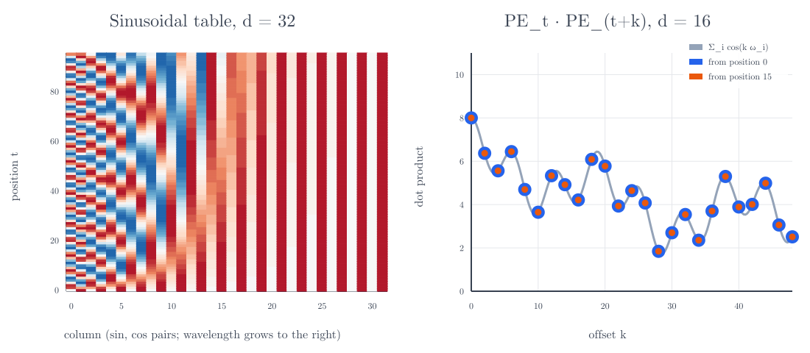
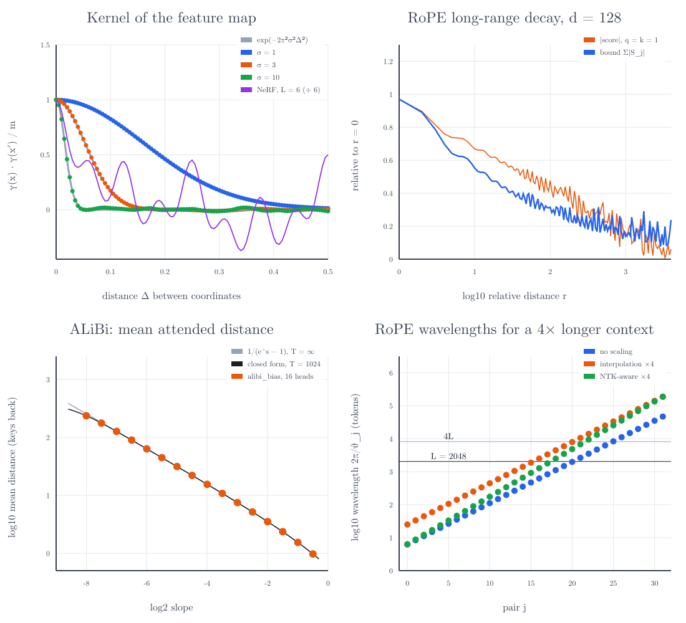

Positional Encodings: Rotations, Biases, Context Extension and Coordinates
Abstract
Attention is blind to order, so position must be put in from outside: added to the inputs (sinusoidal or learned tables), rotated into queries and keys (RoPE) or added to the scores (ALiBi). This report verifies the defining property of each to rounding error. A sinusoidal shift is a fixed rotation, and its dot products equal \(\sum_i\cos(k\omega_i)\). RoPE scores depend only on the offset, also at fractional positions, and obey Su et al.'s long-range decay bound for 200 random pairs. ALiBi's mean attended distance matches \(\sum_k ke^{-sk}/\sum_k e^{-sk}\) to \(3\times10^{-13}\). New functions stretch RoPE to longer contexts (position interpolation and NTK-aware scaling) and encode continuous coordinates. Position interpolation at \(4m,4n\) reproduces the original scores at \(m,n\) exactly. Gaussian Fourier features estimate the kernel \(e^{-2\pi^2\sigma^2\Delta^2}\) to within about \(1/\sqrt m\). On the volcano elevation map, a coordinate MLP with raw inputs cannot fit its own training points to better than 1.3 m. Fourier features fit them almost exactly. Test error is best (0.73–0.80 m) with a wide kernel and collapses to worse than predicting the mean once the kernel is narrower than the spacing of the training points.
The problem
Self-attention computes a weighted average whose weights depend on dot products of content vectors. Permuting the tokens permutes the output in the same way, so without extra information the model cannot tell "dog bites man" from "man bites dog". Positional encodings supply that information in one of three places. They can be added to the token embeddings: a fixed sinusoidal table (Vaswani et al., 2017) or a learned one (Gehring et al., 2017). They can rotate queries and keys by position-dependent angles, as rotary position embedding does (RoPE; Su et al., 2021). Or they can bias the attention scores by distance, as ALiBi does (Press, Smith and Lewis, 2022). The same idea applies to continuous positions: an MLP that maps pixel coordinates to values needs its inputs encoded to fit fine detail (Mildenhall et al., 2020; Tancik et al., 2020).
This report replaces the original example examples/nn/0_foundations/0.2_reusable_layer_library/positional_encodings.cpp. That example printed the sinusoidal table and checked its norms, its shift-as-rotation property and its offset-only dot products. It showed that a learned table receives gradient only at the positions used, checked RoPE against a hand rotation and its relative-position property, and printed ALiBi's biases and the recency preference they induce. All of that is kept.
Added are context extension for RoPE, 2-D tables and coordinate encodings, in datamunge/nn/positional_variants.hpp, together with their theory and an application.
The method
Sinusoidal and learned tables
With frequencies \(\omega_i=b^{-2i/d}\) (base \(b=10000\)), the sinusoidal table is \(\mathrm{PE}_{t,2i}=\sin(t\omega_i)\), \(\mathrm{PE}_{t,2i+1}=\cos(t\omega_i)\), with wavelengths from \(2\pi\) to \(2\pi b\). Every row has norm \(\sqrt{d/2}\). By the angle-addition formulas, moving from position \(t\) to \(t+k\) rotates each pair by the angle \(k\omega_i\), a fixed linear map \(R_k\) that does not depend on \(t\). Hence
so similarity depends only on the offset. A learned table is a parameter matrix with one row per position. Only the rows used receive gradient, and positions beyond its length cannot be represented. nn::sinusoidal_encoding_2d builds a table for an \(H\times W\) grid of image patches. Half the columns encode the row with a \(d/2\) sinusoidal table and half encode the column. The dot product of two grid positions is then a row-offset term plus a column-offset term.
RoPE
RoPE treats each pair \((x_{2j},x_{2j+1})\) of a query or key as a complex number and multiplies it by \(e^{it\theta_j}\) at position \(t\), with \(\theta_j=b^{-2j/d}\). Rotations preserve norms. For a query at \(m\) and a key at \(n\), with \(h_j=q_j\bar k_j\) in complex notation,
which depends on the positions only through \(r=m-n\). Su et al. (2021) bound how this can grow with distance. Abel summation with \(S_j=\sum_{l<j}e^{ir\theta_l}\) and \(h_{d/2}=0\) gives
The sum \(\sum_j|S_j|\) shrinks as \(r\) grows, because the fast rotations cancel. This is RoPE's built-in preference for nearby tokens.
Stretching RoPE to longer contexts
A model trained on contexts of length \(L\) has seen pair \(j\) rotate through angles up to \(L\theta_j\). At length \(sL\) the slow pairs, those with wavelength \(2\pi/\theta_j>L\), reach angles never seen in training. Position interpolation (Chen et al., 2023) divides every rate by \(s\), so position \(st\) has exactly the angles that position \(t\) had. It also compresses the fast pairs, which resolve neighbouring tokens.
NTK-aware scaling (bloc97, 2023; Peng et al., 2024) instead replaces the base \(b\) by \(b\,s^{d/(d-2)}\). Then \(\theta_0=1\) is unchanged and \(\theta_{d/2-1}=b^{-(d-2)/d}/s\) is divided by exactly \(s\), so the slowest pair is interpolated and the fastest is left alone. nn::rope_inverse_frequencies returns the rates under either rule, and nn::apply_rotary_at rotates by them at any real positions.
ALiBi
ALiBi adds \(-s_h(m-n)\) to the score of query \(m\) and key \(n\le m\) in head \(h\), with geometric slopes \(s_h=2^{-8h/H}\). With equal content scores, the last query's weight on the key \(k\) positions back is proportional to \(e^{-s_hk}\), so the mean attended distance is
Each head therefore has a span set by its slope, from about one token to hundreds, with no parameters.
Learned relative attention bias
A learned bias assigns a separate scalar to each head and signed
key-minus-query offset. Clipping at radius r gives 2r + 1 rows.
Every offset at or above r shares one row, and every offset at or
below -r shares another. Add the resulting bias to the attention
logits before applying the mask and softmax. When the loss sums every
bias entry, the derivative of each table value counts the pairs that use it.
Fourier features for coordinates
A ReLU MLP on raw coordinates learns low frequencies first and high frequencies very slowly. This is the spectral bias (Rahaman et al., 2019). NeRF's encoding (nn::fourier_features) maps each coordinate \(p\) to \((p,\sin(2^k\pi p),\cos(2^k\pi p))_{k<L}\). Random Fourier features (nn::gaussian_fourier_features) map \(x\) to \(\gamma(x)=[\cos(2\pi xB),\sin(2\pi xB)]\) with \(B\in\mathbb R^{D\times m}\) drawn \(\mathcal N(0,\sigma^2)\). Then \(\gamma(x)\cdot\gamma(x')=\sum_j\cos(2\pi b_j\cdot(x-x'))\). Its expectation is \(m\) times the characteristic function of \(\mathcal N(0,\sigma^2 I)\) at \(2\pi(x-x')\) (Rahimi and Recht, 2007):
In the neural tangent kernel view, an MLP on \(\gamma(x)\) behaves like kernel regression with a kernel built on this one (Tancik et al., 2020). So \(\sigma\) sets the bandwidth. The kernel falls to one half at distance \(\sqrt{\ln2/2}/(\pi\sigma)\approx0.187/\sigma\). If that is much larger than the detail in the data, the fit is blurry. If it is smaller than the spacing of the training points, the model has no basis for interpolating between them.
Simple examples
Tables, learned rows, RoPE, ALiBi and relative bias
The program prints the \(d=16\) sinusoidal table and checks its norms, its rotations and its dot products. It adds a learned table of 10 rows to a sequence of length 6, compares RoPE with a hand rotation and evaluates the score of one query and key at many position pairs, including fractional ones. It tabulates the RoPE rates for a 4-fold extension, checks the separability of the 2-D table and prints ALiBi's attention for 4 heads.
#include <dm/dm.hpp>
namespace nn = dm::nn;
using nn::Tensor;
using dm::graphics::RGB;
const auto F64 = nn::DType::Float64;
double max_diff(const Tensor& a, const Tensor& b) { return nn::max(nn::abs(a - b)).item(); }
int main() {
std::filesystem::create_directories("build");
// 1. The sinusoidal table: wavelengths, a few rows, row norms, shifts as rotations, offset-only dot products.
const std::int64_t T = 64, d = 16;
const Tensor pe = nn::sinusoidal_encoding(T, d, 10000.0, F64);
std::print("Sinusoidal table, d = 16. Wavelengths 2π·10000^(2i/d):");
for (int i = 0; i < d / 2; ++i) std::print(" {:.1f}", 2 * M_PI * std::pow(10000.0, 2.0 * i / d));
std::print("\n\n| position | sin₀ | cos₀ | sin₁ | cos₁ | sin₂ | cos₂ | … | sin₇ | cos₇ |\n| ---: | ---: | ---: | ---: | ---: | ---: | ---: | :---: | ---: | ---: |\n");
for (int t : {0, 1, 2, 3, 10, 50}) {
std::print("| {} |", t);
for (int j = 0; j < 6; ++j) std::print(" {:.3f} |", pe.at({t, j}));
std::print(" … | {:.3f} | {:.3f} |\n", pe.at({t, 14}), pe.at({t, 15}));
}
const Tensor norms = nn::sqrt(nn::sum(nn::square(pe), {1}));
std::print("\n‖PE_t‖ ranges over [{:.6f}, {:.6f}]; √(d/2) = {:.6f}.\n", nn::min(norms).item(), nn::max(norms).item(), std::sqrt(d / 2.0));
double err = 0;
for (int k : {1, 5, 20})
for (int t = 0; t + k < T; ++t)
for (int i = 0; i < d / 2; ++i) {
const double th = k * std::pow(10000.0, -2.0 * i / d), s = pe.at({t, 2 * i}), c = pe.at({t, 2 * i + 1});
err = std::max({err, std::abs(s * std::cos(th) + c * std::sin(th) - pe.at({t + k, 2 * i})), std::abs(-s * std::sin(th) + c * std::cos(th) - pe.at({t + k, 2 * i + 1}))});
}
double derr = 0;
for (int t = 0; t < 40; ++t)
for (int k = 0; k < 24; ++k) {
double dot = 0, closed = 0;
for (int j = 0; j < d; ++j) dot += pe.at({t, j}) * pe.at({t + k, j});
for (int i = 0; i < d / 2; ++i) closed += std::cos(k * std::pow(10000.0, -2.0 * i / d));
derr = std::max(derr, std::abs(dot - closed));
}
std::print("max |PE_(t+k) − R_k PE_t| for k = 1, 5, 20 = {:.1e}; max |PE_t · PE_(t+k) − Σ_i cos(k ω_i)| over t < 40, k < 24 = {:.1e}.\n", err, derr);
// 2. A learned table [10, 4] added to a sequence of length 6: gradient reaches only rows 0-5.
nn::ParameterStore p(1, F64);
nn::Generator gen(1);
const Tensor x = nn::normal({2, 6, 4}, 0.0, 1.0, gen, F64);
const Tensor table = nn::learned_encoding(p, "pos", 10, 4);
const Tensor tab = p.at("pos/pos");
const Tensor y = x + nn::slice(table, {0, 0}, {6, 4});
const Tensor gt = nn::grad(nn::sum(nn::square(y)), {tab})[0];
std::print("\nLearned table [10, 4] on a sequence of length 6, gradient row norms:");
for (std::int64_t t = 0; t < 10; ++t) std::print(" {:.2f}", std::sqrt(nn::sum(nn::square(nn::slice(gt, {t, 0}, {1, 4}))).item()));
std::print(".\n");
// 3. RoPE: against a hand rotation, norms, and scores that depend on the offset only.
const std::int64_t Tr = 6, dr = 8;
const Tensor q = nn::normal({1, Tr, dr}, 0.0, 1.0, gen, F64), kk = nn::normal({1, Tr, dr}, 0.0, 1.0, gen, F64);
const Tensor rq = nn::apply_rotary(q);
double rerr = 0;
for (std::int64_t t = 0; t < Tr; ++t)
for (std::int64_t j = 0; j < dr / 2; ++j) {
const double a = t * std::pow(10000.0, -2.0 * j / dr), u = q.at({0, t, 2 * j}), v = q.at({0, t, 2 * j + 1});
rerr = std::max({rerr, std::abs(u * std::cos(a) - v * std::sin(a) - rq.at({0, t, 2 * j})), std::abs(u * std::sin(a) + v * std::cos(a) - rq.at({0, t, 2 * j + 1}))});
}
std::print("\nRoPE on q [1, 6, 8]: max |RoPE(q) − hand rotation| = {:.1e}; max |‖q_t‖² − ‖RoPE(q)_t‖²| = {:.1e}.\n", rerr,
nn::max(nn::abs(nn::sum(nn::square(q), {2}) - nn::sum(nn::square(rq), {2}))).item());
// One q vector and one k vector placed at many position pairs.
const Tensor q0 = nn::slice(q, {0, 0, 0}, {1, 1, dr}), k0 = nn::slice(kk, {0, 0, 0}, {1, 1, dr});
const auto th = nn::rope_inverse_frequencies(dr);
auto score = [&](double m, double n) { return nn::sum(nn::apply_rotary_at(q0, {m}, th) * nn::apply_rotary_at(k0, {n}, th)).item(); };
std::print("\n| offset m − n | score at n = 0 | n = 5 | n = 17 | n = 2.5 |\n| ---: | ---: | ---: | ---: | ---: |\n");
for (int off : {0, 1, 3, 10})
std::print("| {} | {:.4f} | {:.4f} | {:.4f} | {:.4f} |\n", off, score(off, 0), score(off + 5, 5), score(off + 17, 17), score(off + 2.5, 2.5));
// 4. RoPE scaling for a context 4 times longer: the rotation rates of each pair.
const auto none = nn::rope_inverse_frequencies(dr), pi = nn::rope_inverse_frequencies(dr, 10000.0, nn::RopeScaling::PositionInterpolation, 4.0),
ntk = nn::rope_inverse_frequencies(dr, 10000.0, nn::RopeScaling::Ntk, 4.0);
std::print("\n| pair j | θ_j | position interpolation, s = 4 | NTK-aware, s = 4 | wavelength 2π/θ_j |\n| ---: | ---: | ---: | ---: | ---: |\n");
for (int j = 0; j < dr / 2; ++j) std::print("| {} | {:.6f} | {:.6f} | {:.6f} | {:.1f} |\n", j, none[j], pi[j], ntk[j], 2 * M_PI / none[j]);
// 5. The 2-D table for a 4 × 6 grid of patches, d = 16: dot products are a row-offset term plus a column-offset term.
const Tensor t2 = nn::sinusoidal_encoding_2d(4, 6, 16);
const Tensor dots = nn::matmul(t2, t2, false, true);
double serr = 0;
const Tensor r8 = nn::sinusoidal_encoding(4, 8, 10000.0, F64), c8 = nn::sinusoidal_encoding(6, 8, 10000.0, F64);
for (int a = 0; a < 24; ++a)
for (int b = 0; b < 24; ++b) {
double rr = 0, cc = 0;
for (int j = 0; j < 8; ++j) rr += r8.at({a / 6, j}) * r8.at({b / 6, j}), cc += c8.at({a % 6, j}) * c8.at({b % 6, j});
serr = std::max(serr, std::abs(dots.at({a, b}) - rr - cc));
}
std::print("\n2-D table for a 4 × 6 grid, d = 16: shape [{}, {}]; max |PE(r, c) · PE(r′, c′) − (row term + column term)| = {:.1e}.\n", t2.size(0), t2.size(1), serr);
// 6. ALiBi: slopes, the bias of head 0, and the attention it alone induces from the last query.
const int heads = 4, Ta = 8;
const auto slopes = nn::alibi_slopes(heads);
const Tensor bias = nn::alibi_bias(heads, Ta, true, F64);
const Tensor w = nn::softmax(bias, -1);
std::print("\nALiBi, 4 heads: slopes");
for (double s : slopes) std::print(" {:.4f}", s);
std::print(".\n\n| head (slope) | weights of the last query on keys 0 … 7 |\n| :--- | :--- |\n");
for (int h = 0; h < heads; ++h) {
std::print("| {} ({:.4f}) |", h, slopes[h]);
for (int n = 0; n < Ta; ++n) std::print(" {:.3f}", w.at({h, Ta - 1, n}));
std::print(" |\n");
}
// 7. Learned relative bias on the upstream two-head, rectangular grid.
{
constexpr int H = 2, Q = 4, K = 6, R = 2;
nn::ParameterStore store(41401, F64);
const Tensor relative = nn::clipped_relative_position_bias(store, "position", H, Q, K, R);
const Tensor table = store.at("position/bias");
const Tensor gradient = nn::grad(nn::sum(relative), {table}).front();
// Diagonal counts in signed order, with the tails combined.
const auto counts = nn::tensor({3., 3., 3., 3., 4., 4., 4., 4., 10., 10.}, {5, H}, F64);
for (int h = 0; h < H; ++h)
for (int q = 0; q < Q; ++q)
for (int k = 0; k < K; ++k)
if (relative.at({h, q, k}) != table.at({std::clamp(k - q, -R, R) + R, h}))
throw std::runtime_error("Incorrect clipped relative bias lookup");
if (gradient.to_vector<double>() != counts.to_vector<double>())
throw std::runtime_error("Relative bias gradient did not accumulate bucket counts");
std::print("\nLearned relative bias checked 48 lookups and 10 derivatives. Signed bucket counts: 3, 3, 4, 4, 10.\n");
}
// Figure: the table, and dot products against the offset.
auto fig = dm::graphics::RLayout::create(1, 2);
{
const std::int64_t TT = 96, dd = 32;
const Tensor big = nn::sinusoidal_encoding(TT, dd, 10000.0, F64);
std::vector<double> xs(dd), ys(TT);
std::iota(xs.begin(), xs.end(), 0.0);
std::iota(ys.begin(), ys.end(), 0.0);
std::vector<std::vector<double>> z(dd, std::vector<double>(TT));
for (std::int64_t j = 0; j < dd; ++j)
for (std::int64_t t = 0; t < TT; ++t) z[j][t] = big.at({t, j});
std::vector<std::string> ylab;
for (std::int64_t t = 0; t < TT; ++t) ylab.push_back("");
auto pl = dm::graphics::RPlot::create();
pl.image(xs, ys, z, dm::graphics::diverging_colors(33), -1.0, 1.0).x_limits(-0.5, dd - 0.5).y_limits(-0.5, TT - 0.5).title("Sinusoidal table, d = 32")
.x_label("column (sin, cos pairs; wavelength grows to the right)").y_label("position t");
fig.add(pl);
}
{
auto pl = dm::graphics::RPlot::create();
std::vector<double> kx, closed;
for (double k = 0; k <= 48; k += 0.25) {
double c = 0;
for (int i = 0; i < d / 2; ++i) c += std::cos(k * std::pow(10000.0, -2.0 * i / d));
kx.push_back(k), closed.push_back(c);
}
pl.lines(kx, closed, "Σ_i cos(k ω_i)", RGB{148, 163, 184}, 3);
const std::vector<RGB> cols{{37, 99, 235}, {234, 88, 12}};
int ci = 0;
for (int t : {0, 15}) {
std::vector<double> ks, ds;
for (int k = 0; k <= 48 && t + k < T; k += 2) {
double dot = 0;
for (int j = 0; j < d; ++j) dot += pe.at({t, j}) * pe.at({t + k, j});
ks.push_back(k), ds.push_back(dot);
}
pl.points(ks, ds, std::format("from position {}", t), cols[ci], ci == 0 ? 9 : 4.5);
++ci;
}
pl.x_limits(0, 48).y_limits(0, 11).title("PE_t · PE_(t+k), d = 16").x_label("offset k").y_label("dot product");
fig.add(pl);
}
fig.size(1100, 480).fit_panels();
fig.save("build/positional_tables.svg");
}Sinusoidal table, d = 16. Wavelengths 2π·10000^(2i/d): 6.3 19.9 62.8 198.7 628.3 1986.9 6283.2 19869.2
| position | sin₀ | cos₀ | sin₁ | cos₁ | sin₂ | cos₂ | … | sin₇ | cos₇ |
|---|---|---|---|---|---|---|---|---|---|
| 0 | 0.000 | 1.000 | 0.000 | 1.000 | 0.000 | 1.000 | … | 0.000 | 1.000 |
| 1 | 0.841 | 0.540 | 0.311 | 0.950 | 0.100 | 0.995 | … | 0.000 | 1.000 |
| 2 | 0.909 | -0.416 | 0.591 | 0.807 | 0.199 | 0.980 | … | 0.001 | 1.000 |
| 3 | 0.141 | -0.990 | 0.813 | 0.583 | 0.296 | 0.955 | … | 0.001 | 1.000 |
| 10 | -0.544 | -0.839 | -0.021 | -1.000 | 0.841 | 0.540 | … | 0.003 | 1.000 |
| 50 | -0.262 | 0.965 | -0.103 | -0.995 | -0.959 | 0.284 | … | 0.016 | 1.000 |
‖PE_t‖ ranges over [2.828427, 2.828427]; √(d/2) = 2.828427. max PE_(t+k) − R_k PE_t for k = 1, 5, 20 = 2.9e-15; max PE_t · PE_(t+k) − Σ_i cos(k ω_i) over t < 40, k < 24 = 3.6e-15.
Learned table [10, 4] on a sequence of length 6, gradient row norms: 2.83 3.10 3.85 3.91 2.94 6.67 0.00 0.00 0.00 0.00.
RoPE on q [1, 6, 8]: max RoPE(q) − hand rotation = 0.0e+00; max ‖q_t‖² − ‖RoPE(q)_t‖² = 8.9e-16.
| offset m − n | score at n = 0 | n = 5 | n = 17 | n = 2.5 |
|---|---|---|---|---|
| 0 | 2.8596 | 2.8596 | 2.8596 | 2.8596 |
| 1 | 3.0086 | 3.0086 | 3.0086 | 3.0086 |
| 3 | 2.4817 | 2.4817 | 2.4817 | 2.4817 |
| 10 | 1.4113 | 1.4113 | 1.4113 | 1.4113 |
| pair j | θ_j | position interpolation, s = 4 | NTK-aware, s = 4 | wavelength 2π/θ_j |
|---|---|---|---|---|
| 0 | 1.000000 | 0.250000 | 1.000000 | 6.3 |
| 1 | 0.100000 | 0.025000 | 0.062996 | 62.8 |
| 2 | 0.010000 | 0.002500 | 0.003969 | 628.3 |
| 3 | 0.001000 | 0.000250 | 0.000250 | 6283.2 |
2-D table for a 4 × 6 grid, d = 16: shape [24, 16]; max PE(r, c) · PE(r′, c′) − (row term + column term) = 1.8e-15.
ALiBi, 4 heads: slopes 0.2500 0.0625 0.0156 0.0039.
| head (slope) | weights of the last query on keys 0 … 7 |
|---|---|
| 0 (0.2500) | 0.044 0.057 0.073 0.094 0.121 0.155 0.199 0.256 |
| 1 (0.0625) | 0.099 0.106 0.113 0.120 0.128 0.136 0.145 0.154 |
| 2 (0.0156) | 0.118 0.120 0.122 0.124 0.126 0.128 0.130 0.132 |
| 3 (0.0039) | 0.123 0.124 0.124 0.125 0.125 0.126 0.126 0.127 |
Learned relative bias checked 48 lookups and 10 derivatives. Signed bucket counts: 3, 3, 4, 4, 10.

Every row of the table has norm 2.828427, which is \(\sqrt{8}\). The rotation \(R_k\) reproduces shifted rows to \(3\times10^{-15}\), and the dot products match \(\sum_i\cos(k\omega_i)\) to \(4\times10^{-15}\) wherever they start, as the coinciding points in the figure show. The dot product decays only slowly and unevenly with distance, so the sinusoidal table itself is a weak recency signal. The learned table's gradient reaches rows 0–5 and is exactly zero for rows 6–9.
RoPE agrees exactly with a hand rotation and preserves norms to \(9\times10^{-16}\). The same query and key give the same score for a given offset whether the key sits at 0, 5, 17 or 2.5: 2.8596 at offset 0, 3.0086 at 1, 2.4817 at 3 and 1.4113 at 10. The scaling table shows the difference between the two extension rules. Position interpolation divides every rate by 4. NTK-aware scaling leaves the fastest pair at 1, divides the slowest by exactly 4 and the ones in between by less (0.063 against 0.025 for pair 1). The 2-D table's dot products equal a row term plus a column term to \(2\times10^{-15}\). ALiBi's steepest head (slope 1/4) puts 0.256 of the last query's attention on the current token and 0.044 on the token 7 back. The flattest head (slope 1/256) is almost uniform, between 0.123 and 0.127.
Checking the theory
Feature kernels, RoPE decay, ALiBi span and context scaling
The program estimates the Gaussian-feature kernel with \(m=4096\) features for \(\sigma=1,3,10\) and compares it with \(e^{-2\pi^2\sigma^2\Delta^2}\). It also checks the NeRF kernel against \(\sum_k\cos(2^k\pi\Delta)\). It evaluates Su et al.'s bound for \(d=128\) and tests it on 200 random query–key pairs at 45 distances up to 4000. It compares ALiBi's mean attended distance for 16 heads and \(T=1024\) with the closed form, and computes the RoPE wavelengths for \(d=64\) under both extension rules, with position interpolation checked at scaled positions.
#include <dm/dm.hpp>
namespace nn = dm::nn;
using nn::Tensor;
using dm::graphics::RGB;
const auto F64 = nn::DType::Float64;
int main() {
std::filesystem::create_directories("build");
const RGB blue{37, 99, 235}, orange{234, 88, 12}, green{22, 163, 74}, purple{147, 51, 234}, grey{148, 163, 184}, black{30, 30, 30};
nn::Generator gen(3);
// 1. Gaussian Fourier features: γ(x)·γ(x')/m against the Gaussian kernel exp(−2π²σ²Δ²), 1-D, m = 4096.
const std::int64_t m = 4096;
std::vector<double> dx;
for (double u = 0; u <= 0.5001; u += 0.005) dx.push_back(u);
const Tensor xs = nn::reshape(nn::from_vector(dx, {static_cast<std::int64_t>(dx.size())}), {-1, 1});
const std::vector<double> sigmas{1.0, 3.0, 10.0};
std::vector<std::vector<double>> kern(sigmas.size());
std::print("| σ | max |empirical − exp(−2π²σ²Δ²)| over Δ ∈ [0, 0.5], m = 4096 | 1/√m, for scale |\n| ---: | ---: | ---: |\n");
for (std::size_t s = 0; s < sigmas.size(); ++s) {
const Tensor B = nn::normal({1, m}, 0.0, sigmas[s], gen, F64);
const Tensor g = nn::gaussian_fourier_features(xs, B);
const Tensor k0 = nn::matmul(g, nn::slice(g, {0, 0}, {1, 2 * m}), false, true) / static_cast<double>(m); // kernel against x' = 0
double err = 0;
for (std::size_t i = 0; i < dx.size(); ++i) {
kern[s].push_back(k0.at({static_cast<std::int64_t>(i), 0}));
err = std::max(err, std::abs(kern[s].back() - std::exp(-2 * M_PI * M_PI * sigmas[s] * sigmas[s] * dx[i] * dx[i])));
}
std::print("| {} | {:.4f} | {:.4f} |\n", sigmas[s], err, 1 / std::sqrt(double(m)));
}
// NeRF octaves: the kernel of fourier_features without the input is Σ_k cos(2^k π Δ), which is not stationary-Gaussian.
const Tensor nf = nn::fourier_features(xs, 6, false);
double nerr = 0;
std::vector<double> nerf_k;
for (std::size_t i = 0; i < dx.size(); ++i) {
double dot = 0, closed = 0;
for (std::int64_t j = 0; j < nf.size(1); ++j) dot += nf.at({static_cast<std::int64_t>(i), j}) * nf.at({0, j});
for (int k = 0; k < 6; ++k) closed += std::cos(std::ldexp(1.0, k) * M_PI * dx[i]);
nerf_k.push_back(dot / 6), nerr = std::max(nerr, std::abs(dot - closed));
}
std::print("NeRF encoding with 6 octaves: max |γ(x)·γ(0) − Σ_k cos(2^k π Δ)| = {:.1e}.\n", nerr);
// 2. RoPE long-range decay (Su et al. 2021). Write q_m·k_n = Re Σ_j h_j e^{i r θ_j} with h_j = (q_{2j} + i q_{2j+1}) conj(k_{2j} + i k_{2j+1})
// and r = m − n. Abel summation with S_j = Σ_{l<j} e^{i r θ_l} gives |q_m·k_n| ≤ max_j |h_{j+1} − h_j| Σ_{j=1}^{d/2} |S_j| (h_{d/2} = 0).
const std::int64_t d = 128;
const auto th = nn::rope_inverse_frequencies(d);
std::vector<double> rr, bound_avg;
for (double e = 0; e <= 3.61; e += 0.02) {
const double r = std::round(std::pow(10.0, e));
if (!rr.empty() && r == rr.back()) continue;
std::complex<double> S = 0;
double tot = 0;
for (std::int64_t j = 0; j < d / 2; ++j) S += std::polar(1.0, r * th[j]), tot += std::abs(S);
rr.push_back(r), bound_avg.push_back(tot / (d / 2));
}
double worst_ratio = 0;
std::vector<double> sx, sy;
const Tensor Q = nn::normal({200, d}, 0.0, 1.0, gen, F64), K = nn::normal({200, d}, 0.0, 1.0, gen, F64);
for (int t = 0; t < 200; ++t) {
for (int ri = 0; ri < static_cast<int>(rr.size()); ri += 3) {
const double r = rr[ri];
const Tensor qr = nn::apply_rotary_at(nn::slice(Q, {t, 0}, {1, d}), {r}, th);
const double score = nn::sum(qr * nn::slice(K, {t, 0}, {1, d})).item();
double hmax = 0;
std::complex<double> prev = 0;
for (std::int64_t j = d / 2 - 1; j >= -1; --j) { // max |h_{j+1} − h_j| including h_{d/2} = 0
const std::complex<double> h = j >= 0 ? std::complex<double>(Q.at({t, 2 * j}), Q.at({t, 2 * j + 1})) * std::conj(std::complex<double>(K.at({t, 2 * j}), K.at({t, 2 * j + 1}))) : 0.0;
if (j < d / 2 - 1 || true) hmax = std::max(hmax, std::abs(h - prev));
prev = h;
if (j < 0) break;
}
const double bound = hmax * bound_avg[ri] * (d / 2);
worst_ratio = std::max(worst_ratio, std::abs(score) / bound);
if (t < 20) sx.push_back(std::log10(r)), sy.push_back(std::abs(score) / (hmax * (d / 2)));
}
}
std::print("\nRoPE, d = 128: (1/(d/2)) Σ_j |S_j| is {:.3f} at r = 1, {:.3f} at r = 10, {:.3f} at r = 100, {:.3f} at r = 1000.\n", bound_avg[0],
bound_avg[std::ranges::find(rr, 10.0) - rr.begin()], bound_avg[std::ranges::find(rr, 100.0) - rr.begin()], bound_avg[std::ranges::find(rr, 1000.0) - rr.begin()]);
std::print("For 200 random (q, k) pairs at {} offsets, the largest |q_m·k_n| / bound is {:.3f} (the bound holds when ≤ 1).\n", (rr.size() + 2) / 3, worst_ratio);
// 3. ALiBi: with equal content scores the last query's weights are ∝ e^{−s k} for distance k = 0 … T−1.
// Mean attended distance: Σ k e^{−sk} / Σ e^{−sk}; for T → ∞ it is 1/(e^s − 1).
const int Ta = 1024;
const auto slopes = nn::alibi_slopes(16);
const Tensor w = nn::softmax(nn::alibi_bias(16, Ta, true, F64), -1);
std::vector<double> ls, md, mclosed;
double aerr = 0;
std::print("\n| head | slope s | mean distance from softmax | Σ k e^{{−sk}} / Σ e^{{−sk}} | 1/(e^s − 1) |\n| ---: | ---: | ---: | ---: | ---: |\n");
for (int h = 0; h < 16; ++h) {
double mean = 0, num = 0, den = 0;
for (int n = 0; n < Ta; ++n) mean += (Ta - 1 - n) * w.at({h, Ta - 1, n});
for (int k = 0; k < Ta; ++k) num += k * std::exp(-slopes[h] * k), den += std::exp(-slopes[h] * k);
aerr = std::max(aerr, std::abs(mean - num / den));
ls.push_back(std::log2(slopes[h])), md.push_back(std::log10(mean)), mclosed.push_back(1 / std::expm1(slopes[h]));
if (h % 3 == 0 || h == 15) std::print("| {} | {:.6f} | {:.2f} | {:.2f} | {:.2f} |\n", h, slopes[h], mean, num / den, mclosed.back());
}
std::print("Largest difference between the softmax and the finite closed form over all 16 heads: {:.1e}.\n", aerr);
// 4. RoPE scaling: wavelength 2π/θ_j of each pair, for a model trained on L = 2048 and extended 4 times.
const std::int64_t dd = 64, L = 2048;
const auto none = nn::rope_inverse_frequencies(dd), pi = nn::rope_inverse_frequencies(dd, 10000.0, nn::RopeScaling::PositionInterpolation, 4.0),
ntk = nn::rope_inverse_frequencies(dd, 10000.0, nn::RopeScaling::Ntk, 4.0);
int full_turns = 0;
for (double t : none) full_turns += 2 * M_PI / t <= L;
std::print("\nd = 64, trained on L = 2048: {} of 32 pairs complete a full turn within L. Position interpolation divides every rate by 4 (fastest pair: angle per token {:.3f} instead of 1); "
"NTK-aware scaling keeps the fastest pair ({:.3f}) and divides the slowest by {:.3f}.\n", full_turns, pi[0], ntk[0], none[31] / ntk[31]);
// A sanity check of what position interpolation promises: scores at positions (4m, 4n) with PI equal those at (m, n) without.
const Tensor q = nn::normal({1, dd}, 0.0, 1.0, gen, F64), k = nn::normal({1, dd}, 0.0, 1.0, gen, F64);
double pierr = 0;
for (double mpos : {3.0, 100.0, 1500.0})
for (double npos : {0.0, 77.0, 2000.0}) {
const double s1 = nn::sum(nn::apply_rotary_at(q, {4 * mpos}, pi) * nn::apply_rotary_at(k, {4 * npos}, pi)).item();
const double s0 = nn::sum(nn::apply_rotary_at(q, {mpos}, none) * nn::apply_rotary_at(k, {npos}, none)).item();
pierr = std::max(pierr, std::abs(s1 - s0));
}
std::print("Score with interpolation at (4m, 4n) minus score without at (m, n), 9 position pairs: max {:.1e}.\n", pierr);
auto fig = dm::graphics::RLayout::create(2, 2);
{
auto pl = dm::graphics::RPlot::create();
const std::vector<RGB> cols{blue, orange, green};
for (std::size_t s = 0; s < sigmas.size(); ++s) {
std::vector<double> gx, gy;
for (double u = 0; u <= 0.5001; u += 0.0025) gx.push_back(u), gy.push_back(std::exp(-2 * M_PI * M_PI * sigmas[s] * sigmas[s] * u * u));
pl.lines(gx, gy, s == 0 ? "exp(−2π²σ²Δ²)" : "", grey, 3).points(dx, kern[s], std::format("σ = {}", sigmas[s]), cols[s], 3.5);
}
pl.lines(dx, nerf_k, "NeRF, L = 6 (÷ 6)", purple, 1.8);
pl.x_limits(0, 0.5).y_limits(-0.45, 1.5).title("Kernel of the feature map").x_label("distance Δ between coordinates").y_label("γ(x) · γ(x′) / m");
fig.add(pl);
}
{
auto pl = dm::graphics::RPlot::create();
std::vector<double> lr;
for (double r : rr) lr.push_back(std::log10(r));
std::vector<double> bn, ones;
for (std::size_t i = 0; i < rr.size(); ++i) {
double c = 0;
for (std::int64_t j = 0; j < d / 2; ++j) c += std::cos(rr[i] * th[j]);
bn.push_back(bound_avg[i] / ((d / 2 + 1) / 2.0)), ones.push_back(std::abs(c) / (d / 2));
}
pl.lines(lr, ones, "|score|, q = k = 1", orange, 1.6).lines(lr, bn, "bound Σ|S_j|", blue, 2.4);
pl.x_limits(0, 3.6).y_limits(0, 1.3).title("RoPE long-range decay, d = 128").x_label("log10 relative distance r").y_label("relative to r = 0");
fig.add(pl);
}
{
auto pl = dm::graphics::RPlot::create();
std::vector<double> cx, cy, cinf;
for (double e = -8.6; e <= -0.3; e += 0.05) {
const double s = std::pow(2.0, e);
double num = 0, den = 0;
for (int kk = 0; kk < Ta; ++kk) num += kk * std::exp(-s * kk), den += std::exp(-s * kk);
cx.push_back(e), cy.push_back(std::log10(num / den)), cinf.push_back(std::log10(1 / std::expm1(s)));
}
pl.lines(cx, cinf, "1/(e^s − 1), T = ∞", grey, 1.5).lines(cx, cy, "closed form, T = 1024", black, 1.5).points(ls, md, "alibi_bias, 16 heads", orange, 6);
pl.x_limits(-9, 0).y_limits(-0.3, 3.4).title("ALiBi: mean attended distance").x_label("log2 slope").y_label("log10 mean distance (keys back)");
fig.add(pl);
}
{
auto pl = dm::graphics::RPlot::create();
std::vector<double> jx, w0, w1, w2;
for (int j = 0; j < 32; ++j) jx.push_back(j), w0.push_back(std::log10(2 * M_PI / none[j])), w1.push_back(std::log10(2 * M_PI / pi[j])), w2.push_back(std::log10(2 * M_PI / ntk[j]));
pl.abline_h(std::log10(double(L)), black, 1).abline_h(std::log10(4.0 * L), grey, 1);
pl.points(jx, w0, "no scaling", blue, 5).points(jx, w1, "interpolation ×4", orange, 5).points(jx, w2, "NTK-aware ×4", green, 5);
pl.text(5, std::log10(double(L)) + 0.17, "L = 2048").text(5, std::log10(4.0 * L) + 0.17, "4L");
pl.x_limits(-1, 32).y_limits(0, 6.5).title("RoPE wavelengths for a 4× longer context").x_label("pair j").y_label("log10 wavelength 2π/θ_j (tokens)");
fig.add(pl);
}
fig.size(1100, 1000).fit_panels();
fig.save("build/positional_theory.svg");
}| σ | max | empirical − exp(−2π²σ²Δ²) | over Δ ∈ [0, 0.5], m = 4096 | 1/√m, for scale |
|---|---|---|---|---|
| 1 | 0.0083 | 0.0156 | ||
| 3 | 0.0098 | 0.0156 | ||
| 10 | 0.0195 | 0.0156 |
NeRF encoding with 6 octaves: max γ(x)·γ(0) − Σ_k cos(2^k π Δ) = 0.0e+00.
RoPE, d = 128: (1/(d/2)) Σ_j S_j is 31.538 at r = 1, 17.954 at r = 10, 10.227 at r = 100, 4.471 at r = 1000. For 200 random (q, k) pairs at 45 offsets, the largest q_m·k_n / bound is 0.039 (the bound holds when ≤ 1).
| head | slope s | mean distance from softmax | Σ k e{−sk} / Σ e{−sk} | 1/(e^s − 1) |
|---|---|---|---|---|
| 0 | 0.707107 | 0.97 | 0.97 | 0.97 |
| 3 | 0.250000 | 3.52 | 3.52 | 3.52 |
| 6 | 0.088388 | 10.82 | 10.82 | 10.82 |
| 9 | 0.031250 | 31.50 | 31.50 | 31.50 |
| 12 | 0.011049 | 90.00 | 90.00 | 90.01 |
| 15 | 0.003906 | 236.40 | 236.40 | 255.50 |
Largest difference between the softmax and the finite closed form over all 16 heads: 2.8e-13.
d = 64, trained on L = 2048: 21 of 32 pairs complete a full turn within L. Position interpolation divides every rate by 4 (fastest pair: angle per token 0.250 instead of 1); NTK-aware scaling keeps the fastest pair (1.000) and divides the slowest by 4.000. Score with interpolation at (4m, 4n) minus score without at (m, n), 9 position pairs: max 0.0e+00.

The estimated Gaussian-feature kernels deviate from \(e^{-2\pi^2\sigma^2\Delta^2}\) by at most 0.008, 0.010 and 0.020. That is the Monte Carlo error of 4096 random features, of order \(1/\sqrt{4096}=0.016\). The NeRF kernel equals \(\sum_k\cos(2^k\pi\Delta)\) exactly. It is not a bump, and it has large side lobes at distances where it should be small.
Su et al.'s bound decays with distance. Relative to distance 0, \(\sum_j|S_j|\) is 0.97 at \(r=1\), 0.55 at 10, 0.31 at 100 and 0.14 at 1000. For random queries and keys the bound holds with a large margin: the largest ratio of \(|q\cdot k|\) to the bound is 0.039, because random \(h_j\) make \(\max_j|h_{j+1}-h_j|\) large. The exact score for \(q=k=1\) decays in the same way, which is the recency preference the bound describes.
ALiBi's mean attended distance agrees with the finite closed form to \(2.8\times10^{-13}\) for all 16 heads. It runs from 0.97 tokens for the steepest head to 236 for the flattest, close to \(1/(e^s-1)\) except for the flattest head, whose span (255.5 for unlimited context) is cut short by \(T=1024\).
For \(d=64\) and \(L=2048\), 21 of the 32 RoPE pairs complete a full turn within the training length. The other 11 are the ones that see new angles at longer contexts. Position interpolation shifts all wavelengths up by a factor of 4. NTK-aware scaling keeps the fastest pair's angle per token at 1.000 and multiplies the slowest pair's wavelength by exactly 4. With position interpolation, scores at positions \((4m,4n)\) equal the original scores at \((m,n)\) exactly for all 9 pairs tested.
A dataset: a coordinate MLP on the volcano
The volcano data (R Core Team, 2024) is an \(87\times61\) grid of elevations of Maunga Whau in Auckland, in metres. Coordinates are scaled by the longer side to \([0,1]\times[0,0.70]\) and elevation is standardised. Every other row and column, 1364 points, trains, and the other 3943 points test. This asks the model to interpolate at half the training spacing. The MLP has four hidden ReLU layers of width 64, in single precision, trained by Adam (step \(3\times10^{-3}\)) for 200 full-batch steps, for two seeds. The inputs are the raw coordinates, NeRF octaves with \(L=4\) or 6, or 128 Gaussian Fourier features with \(\sigma=1,4,10,30\). Bilinear interpolation of the training grid is the baseline.
#include <dm/dm.hpp>
namespace nn = dm::nn;
namespace init = dm::nn::init;
using nn::Activation;
using nn::Tensor;
using dm::graphics::RGB;
const auto F32 = nn::DType::Float32;
int main() {
std::filesystem::create_directories("build");
// The volcano elevation grid (R's datasets::volcano), long format x, y, elevation.
const auto df = dm::datasets::volcano();
const auto xv = df.get_column<double>("x").values(), yv = df.get_column<double>("y").values(), ev = df.get_column<double>("elevation").values();
const double xmax = *std::ranges::max_element(xv), ymax = *std::ranges::max_element(yv);
const double step = xv[1] - xv[0];
const auto nx = static_cast<std::int64_t>(std::llround(xmax / step)) + 1, ny = static_cast<std::int64_t>(std::llround(ymax / step)) + 1;
std::vector<std::vector<double>> grid(nx, std::vector<double>(ny));
double emean = 0;
for (std::size_t i = 0; i < ev.size(); ++i) grid[std::llround(xv[i] / step)][std::llround(yv[i] / step)] = ev[i], emean += ev[i] / ev.size();
double evar = 0;
for (double e : ev) evar += (e - emean) * (e - emean) / ev.size();
const double esd = std::sqrt(evar);
std::print("Volcano grid: {} × {} = {} points, elevation {} to {} m (mean {:.1f}, sd {:.1f}).\n", nx, ny, ev.size(), *std::ranges::min_element(ev), *std::ranges::max_element(ev), emean, esd);
// Coordinates scaled by the longer side so that both axes have the same unit; train on every other point in each direction.
const double scale = static_cast<double>(std::max(nx, ny) - 1);
std::vector<double> ctr, cte, ttr, tte, call, tall;
for (std::int64_t i = 0; i < nx; ++i)
for (std::int64_t j = 0; j < ny; ++j) {
const double u = i / scale, v = j / scale, t = (grid[i][j] - emean) / esd;
call.insert(call.end(), {u, v}), tall.push_back(t);
if (i % 2 == 0 && j % 2 == 0) ctr.insert(ctr.end(), {u, v}), ttr.push_back(t);
else cte.insert(cte.end(), {u, v}), tte.push_back(t);
}
const auto ntr = static_cast<std::int64_t>(ttr.size()), nte = static_cast<std::int64_t>(tte.size()), nall = static_cast<std::int64_t>(tall.size());
const Tensor Ctr = nn::from_vector(ctr, {ntr, 2}).to(F32), Cte = nn::from_vector(cte, {nte, 2}).to(F32), Call = nn::from_vector(call, {nall, 2}).to(F32);
const Tensor Ytr = nn::from_vector(ttr, {ntr, 1}).to(F32), Yte = nn::from_vector(tte, {nte, 1}).to(F32);
std::print("Training on {} points (every other row and column), testing on the other {}.\n\n", ntr, nte);
struct Enc { std::string label; int kind; double param; }; // kind 0 raw, 1 NeRF octaves, 2 Gaussian features
const std::vector<Enc> encs{{"raw (x, y)", 0, 0}, {"NeRF octaves, L = 4", 1, 4}, {"NeRF octaves, L = 6", 1, 6}, {"Gaussian, σ = 1", 2, 1},
{"Gaussian, σ = 4", 2, 4}, {"Gaussian, σ = 10", 2, 10}, {"Gaussian, σ = 30", 2, 30}};
const int steps = 200;
std::print("| encoding | inputs | train RMSE (m) | test RMSE (m) |\n| :--- | ---: | ---: | ---: |\n");
std::vector<std::vector<double>> recon(encs.size());
std::vector<double> test_rmse_mean;
for (std::size_t e = 0; e < encs.size(); ++e) {
std::vector<double> tr_r, te_r;
std::int64_t width = 0;
for (std::uint64_t seed : {1, 2}) {
nn::Generator g(100 + seed);
const Tensor B = nn::normal({2, 128}, 0.0, encs[e].param > 0 ? encs[e].param : 1.0, g, F32);
auto encode = [&](const Tensor& c) {
if (encs[e].kind == 0) return c;
if (encs[e].kind == 1) return nn::fourier_features(c, static_cast<std::int64_t>(encs[e].param));
return nn::gaussian_fourier_features(c, B);
};
nn::ParameterStore p(seed, F32);
const nn::DenseOptions hid{.activation = Activation::Relu, .init = init::he_normal()};
auto f = [&](const Tensor& c) {
Tensor h = encode(c);
for (int l = 0; l < 4; ++l) h = nn::dense(p, std::format("h{}", l), h, 64, hid);
return nn::dense(p, "out", h, 1);
};
width = encode(nn::slice(Ctr, {0, 0}, {1, 2})).size(1);
(void)f(nn::slice(Ctr, {0, 0}, {2, 2}));
nn::Optimizer opt(p, 3e-3, {.kind = nn::OptimizerKind::Adam});
for (int s = 0; s < steps; ++s) opt.minimize(nn::mean(nn::square(f(Ctr) - Ytr)));
nn::NoGradGuard ng;
tr_r.push_back(esd * std::sqrt(nn::mean(nn::square(f(Ctr) - Ytr)).item()));
te_r.push_back(esd * std::sqrt(nn::mean(nn::square(f(Cte) - Yte)).item()));
if (seed == 1) recon[e] = f(Call).to(nn::DType::Float64).to_vector<double>();
}
test_rmse_mean.push_back((te_r[0] + te_r[1]) / 2);
std::print("| {} | {} | {:.2f}, {:.2f} | {:.2f}, {:.2f} |\n", encs[e].label, width, tr_r[0], tr_r[1], te_r[0], te_r[1]);
}
// Baseline: bilinear interpolation of the training grid (no learning).
double bil = 0;
int cnt = 0;
for (std::int64_t i = 0; i < nx; ++i)
for (std::int64_t j = 0; j < ny; ++j) {
if (i % 2 == 0 && j % 2 == 0) continue;
const std::int64_t i0 = std::min<std::int64_t>(i / 2 * 2, (nx - 1) / 2 * 2), j0 = std::min<std::int64_t>(j / 2 * 2, (ny - 1) / 2 * 2);
const std::int64_t i1 = std::min<std::int64_t>(i0 + 2, (nx - 1) / 2 * 2), j1 = std::min<std::int64_t>(j0 + 2, (ny - 1) / 2 * 2);
const double a = i1 == i0 ? 0 : double(i - i0) / (i1 - i0), b = j1 == j0 ? 0 : double(j - j0) / (j1 - j0);
const double v = (1 - a) * (1 - b) * grid[i0][j0] + a * (1 - b) * grid[i1][j0] + (1 - a) * b * grid[i0][j1] + a * b * grid[i1][j1];
bil += (v - grid[i][j]) * (v - grid[i][j]), ++cnt;
}
std::print("\nBilinear interpolation of the training points (no learning): test RMSE {:.2f} m.\n", std::sqrt(bil / cnt));
std::print("Training points are {:.4f} apart in scaled coordinates. Distance at which the Gaussian-feature kernel exp(−2π²σ²Δ²) falls to 1/2, √(ln 2 / 2) / (πσ):", 2.0 / scale);
for (double sg : {1.0, 4.0, 10.0, 30.0}) std::print(" σ = {}: {:.4f};", sg, std::sqrt(std::log(2.0) / 2) / (M_PI * sg));
std::print("\n");
// Figure: truth and four reconstructions, plus test RMSE against the encoding.
auto fig = dm::graphics::RLayout::create(3, 2);
auto heat = [&](const std::vector<double>& vals, bool standardised, const std::string& title) {
std::vector<double> xs(nx), ys(ny);
std::iota(xs.begin(), xs.end(), 0.0);
std::iota(ys.begin(), ys.end(), 0.0);
std::vector<std::vector<double>> z(nx, std::vector<double>(ny));
for (std::int64_t i = 0; i < nx; ++i)
for (std::int64_t j = 0; j < ny; ++j) z[i][j] = standardised ? emean + esd * vals[i * ny + j] : vals[i * ny + j];
auto pl = dm::graphics::RPlot::create();
pl.image(xs, ys, z, dm::graphics::terrain_colors(40), 90.0, 200.0).x_limits(-0.5, nx - 0.5).y_limits(-0.5, ny - 0.5).title(title).x_label("row index").y_label("column index");
fig.add(pl);
};
std::vector<double> truth;
for (std::int64_t i = 0; i < nx; ++i)
for (std::int64_t j = 0; j < ny; ++j) truth.push_back(grid[i][j]);
heat(truth, false, "Volcano elevation (truth)");
heat(recon[0], true, std::format("Raw coordinates (test RMSE {:.1f} m)", test_rmse_mean[0]));
heat(recon[2], true, std::format("NeRF octaves, L = 6 ({:.1f} m)", test_rmse_mean[2]));
heat(recon[5], true, std::format("Gaussian features, σ = 10 ({:.1f} m)", test_rmse_mean[5]));
heat(recon[6], true, std::format("Gaussian features, σ = 30 ({:.1f} m)", test_rmse_mean[6]));
{
auto pl = dm::graphics::RPlot::create();
std::vector<double> xs, ys;
for (std::size_t e = 0; e < encs.size(); ++e) xs.push_back(e), ys.push_back(test_rmse_mean[e]);
for (double& y : ys) y = std::log10(y);
pl.points(xs, ys, "MLP, mean of 2 seeds", RGB{37, 99, 235}, 7).abline_h(std::log10(std::sqrt(bil / cnt)), RGB{148, 163, 184}, 1.5);
pl.text(4.6, std::log10(std::sqrt(bil / cnt)) - 0.12, "bilinear interpolation");
pl.x_limits(-0.5, encs.size() - 0.5).x_tick_labels({"raw", "L=4", "L=6", "σ=1", "σ=4", "σ=10", "σ=30"}).y_limits(-0.5, 2.0)
.title("Test RMSE by encoding").x_label("encoding").y_label("log10 test RMSE (m)");
fig.add(pl);
}
fig.size(1100, 1350).fit_panels();
fig.save("build/positional_volcano.svg");
}Volcano grid: 87 × 61 = 5307 points, elevation 94 to 195 m (mean 130.2, sd 25.8). Training on 1364 points (every other row and column), testing on the other 3943.
| encoding | inputs | train RMSE (m) | test RMSE (m) |
|---|---|---|---|
| raw (x, y) | 2 | 4.94, 4.31 | 4.91, 4.29 |
| NeRF octaves, L = 4 | 18 | 0.94, 0.87 | 1.18, 1.20 |
| NeRF octaves, L = 6 | 26 | 0.69, 0.71 | 3.11, 3.18 |
| Gaussian, σ = 1 | 256 | 0.61, 0.65 | 0.86, 0.89 |
| Gaussian, σ = 4 | 256 | 0.01, 0.02 | 2.31, 2.36 |
| Gaussian, σ = 10 | 256 | 0.00, 0.00 | 16.40, 15.49 |
| Gaussian, σ = 30 | 256 | 0.00, 0.00 | 29.74, 29.93 |
Bilinear interpolation of the training points (no learning): test RMSE 0.70 m. Training points are 0.0233 apart in scaled coordinates. Distance at which the Gaussian-feature kernel exp(−2π²σ²Δ²) falls to 1/2, √(ln 2 / 2) / (πσ): σ = 1: 0.1874; σ = 4: 0.0468; σ = 10: 0.0187; σ = 30: 0.0062;

The volcano is smooth relative to its grid, which makes it a fair test of interpolation. Raw coordinates show the spectral bias directly: after 200 steps the MLP still misses its own training points by 4.30–4.97 m. Every Fourier encoding drives the training error to 0.94 m or less, and Gaussian features with \(\sigma\ge4\) to 0.02 m or less. Fitting the training points is not the same as interpolating them, and the test error depends on the kernel bandwidth as the theory predicts. The training points are 0.0233 apart. The Gaussian-feature kernel falls to one half at 0.187 (\(\sigma=1\)), 0.047 (\(\sigma=4\)), 0.019 (\(\sigma=10\)) and 0.006 (\(\sigma=30\)). With \(\sigma=1\) the test error is lowest (0.86 and 0.89 m) and close to bilinear interpolation (0.70 m). With \(\sigma=4\), about two spacings, it grows to about 2.3 m. Once the half-width drops below one spacing, the model memorises the training points and predicts noise between them: 15–16 m at \(\sigma=10\) and 30 m at \(\sigma=30\), which is worse than predicting the mean (the elevation's standard deviation is 25.8 m). NeRF octaves with \(L=4\) are nearly as good as \(\sigma=1\) (1.18 and 1.20 m), but \(L=6\) already gives 3.2 m, consistent with the side lobes of its kernel.
Conclusion
Each positional encoding does what its algebra says, to rounding error. Sinusoidal tables turn shifts into fixed rotations and make dot products functions of the offset alone. Learned tables get gradient only where used. RoPE makes attention scores functions of the offset, also at fractional positions, and its scores obey a decay bound that favours nearby tokens. ALiBi gives each head an exponential recency profile whose span is \(1/(e^s-1)\), cut off by the context length.
To extend RoPE, position interpolation maps a longer context exactly onto the trained angles but slows every pair. NTK-aware scaling leaves the fast pairs that resolve neighbouring tokens alone and interpolates only the slow ones. For continuous coordinates, Fourier features overcome the spectral bias of a plain MLP, but their bandwidth must match the data. On the volcano, a wide kernel came close to bilinear interpolation. A kernel narrower than the training spacing memorised the samples and predicted noise in between, ending up worse than a constant.
References
- A. Rahimi and B. Recht (2007). "Random features for large-scale kernel machines". Advances in Neural Information Processing Systems 20.
- A. Vaswani, N. Shazeer, N. Parmar, J. Uszkoreit, L. Jones, A. N. Gomez, Ł. Kaiser and I. Polosukhin (2017). "Attention is all you need". Advances in Neural Information Processing Systems 30.
- J. Gehring, M. Auli, D. Grangier, D. Yarats and Y. N. Dauphin (2017). "Convolutional sequence to sequence learning". ICML.
- N. Rahaman, A. Baratin, D. Arpit, F. Draxler, M. Lin, F. Hamprecht, Y. Bengio and A. Courville (2019). "On the spectral bias of neural networks". ICML.
- B. Mildenhall, P. P. Srinivasan, M. Tancik, J. T. Barron, R. Ramamoorthi and R. Ng (2020). "NeRF: representing scenes as neural radiance fields for view synthesis". ECCV.
- M. Tancik, P. P. Srinivasan, B. Mildenhall, S. Fridovich-Keil, N. Raghavan, U. Singhal, R. Ramamoorthi, J. T. Barron and R. Ng (2020). "Fourier features let networks learn high frequency functions in low dimensional domains". Advances in Neural Information Processing Systems 33.
- J. Su, Y. Lu, S. Pan, A. Murtadha, B. Wen and Y. Liu (2021). "RoFormer: enhanced transformer with rotary position embedding". arXiv:2104.09864
- O. Press, N. A. Smith and M. Lewis (2022). "Train short, test long: attention with linear biases enables input length extrapolation". ICLR.
- S. Chen, S. Wong, L. Chen and Y. Tian (2023). "Extending context window of large language models via positional interpolation". arXiv:2306.15595
- bloc97 (2023). "NTK-aware scaled RoPE allows LLaMA models to have extended (8k+) context size without any fine-tuning and minimal perplexity degradation". Online post, r/LocalLLaMA.
- B. Peng, J. Quesnelle, H. Fan and E. Shippole (2024). "YaRN: efficient context window extension of large language models". ICLR.
- R Core Team (2024). "volcano: topographic information on Auckland's Maunga Whau volcano". R: A Language and Environment for Statistical Computing, datasets package.